Bathhouse small-prop inspections
Actual exported GLBs, reimported in Blender 5.2.4 LTS. 1,904 triangles with two towels. Local asset evidence; game/GPU acceptance remains separate.
Production and rights record · Measurements and hashes
Soap · 236 triangles
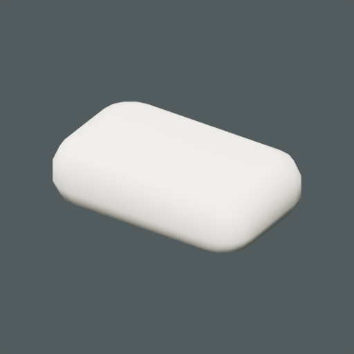
threequarter
top
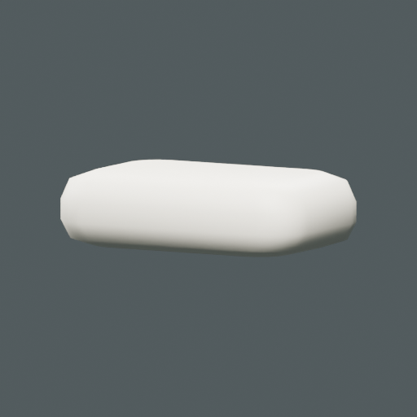
side
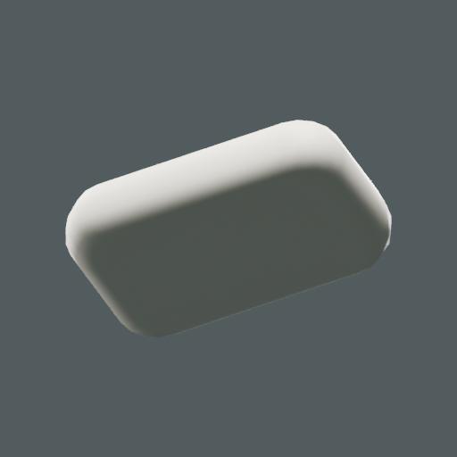
underside
Towel · 296 triangles
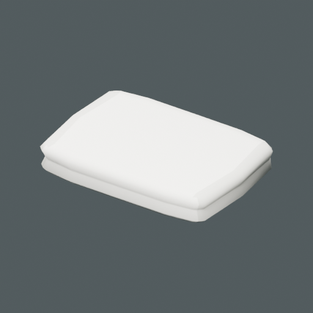
threequarter
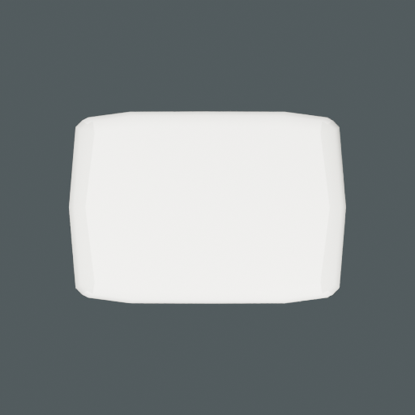
top
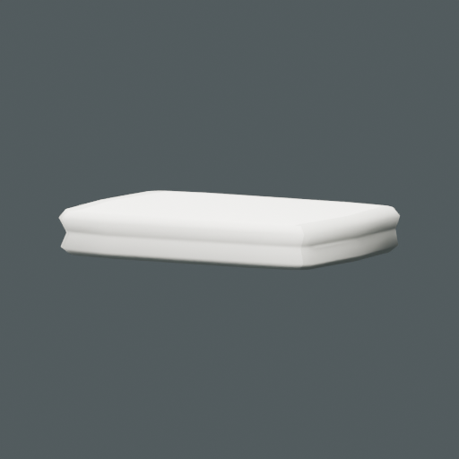
side
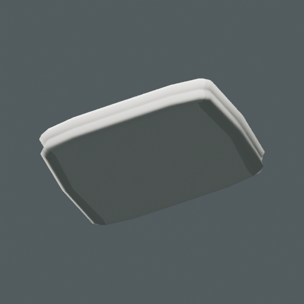
underside
Coin 500 · 608 triangles
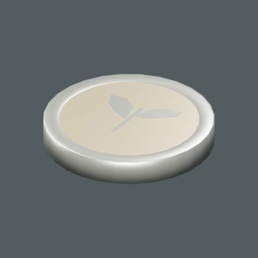
threequarter
top
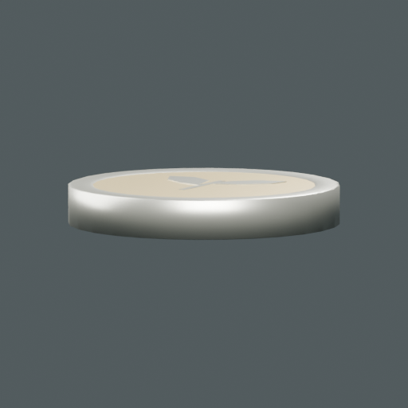
side
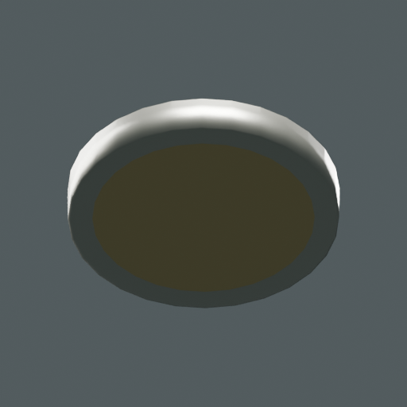
underside
Sauna Key · 468 triangles
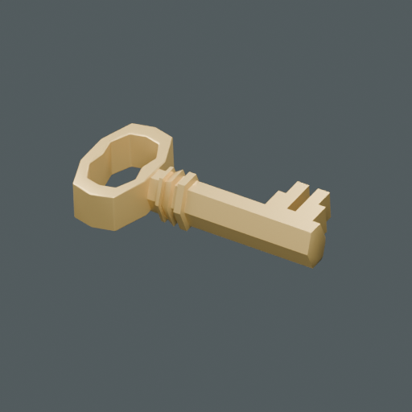
threequarter
top
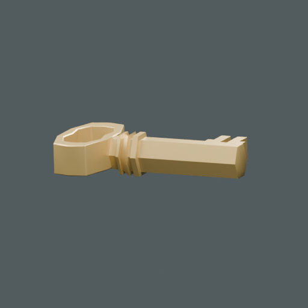
side
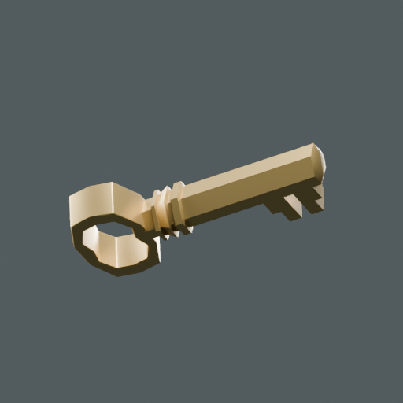
underside
Towel contact dimensions
Neutral head/hand proxies only. Bottom-origin mesh is centered by −0.02 m; the held wrapper rotates 90° about X. These proxies are not game characters or a rig acceptance test.
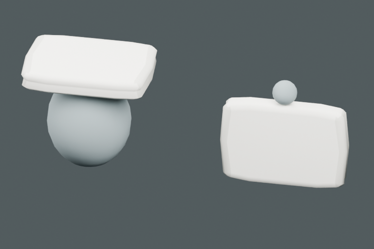
Actual public source geometry
Quaternius CC0 originals. The source imports use their original orientation and a separate inspection light setup; these are lineage references, not matched before/after images.
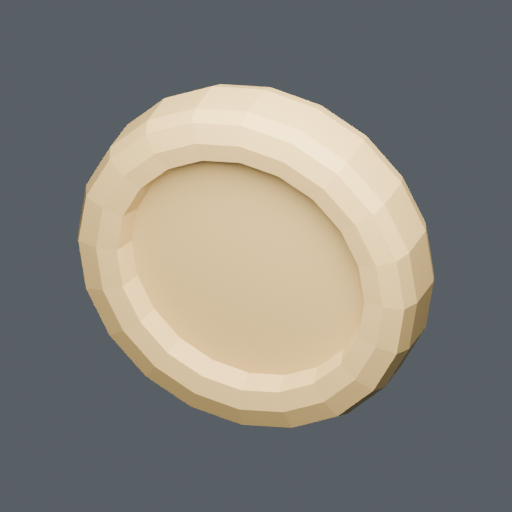
Unmodified Coin.obj source shape
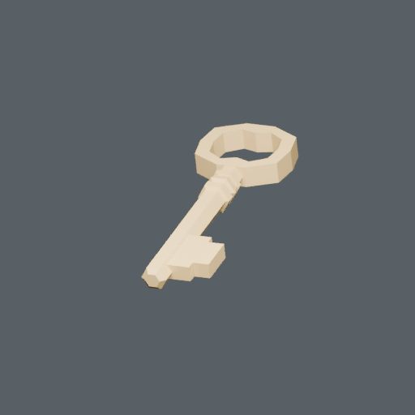
Unmodified Key1.obj source shape